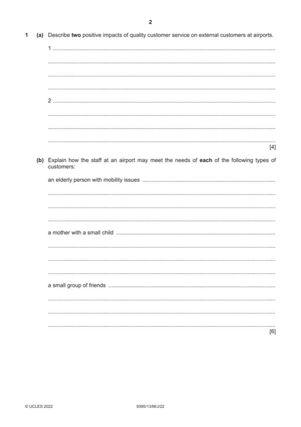

Question 1

Original paper page 2
Part 1(a) — solution
- If employees are efficient (1) then people will want to use the airport
- Good health and safety (1) will make passengers feel safe (1)
- Plenty of assistance available (1) will encourage passengers to spend
Mark points
- If employees are efficient (1) then people will want to use the airport
- Good health and safety (1) will make passengers feel safe (1)
- Plenty of assistance available (1) will encourage passengers to spend
Part 1(b) — solution
- Provide a guide (1) so the person does not get lost in the airport (1)
- Take them to the departure gate (1) so they do not miss their flight (1)
- Show the mother where the child-friendly areas are (1) so that she can
- Provide assistance (1) to help them get through security and on to
- Provide seating together (1) on their flight so they can keep in touch (1)
- Advise them (1) which places may be better for groups to go to in the
Mark points
- Provide a guide (1) so the person does not get lost in the airport (1)
- Take them to the departure gate (1) so they do not miss their flight (1)
- Show the mother where the child-friendly areas are (1) so that she can
- Provide assistance (1) to help them get through security and on to
- Provide seating together (1) on their flight so they can keep in touch (1)
- Advise them (1) which places may be better for groups to go to in the
Part 1(c) — solution
- Security guards (1) will patrol the airport (1) to spot and deal with any
- Training (1) for security and first aid emergencies (1) will make staff feel
- Ensure public areas are kept clean (1) this will help to minimise transfer
Mark points
- Security guards (1) will patrol the airport (1) to spot and deal with any
- Training (1) for security and first aid emergencies (1) will make staff feel
- Ensure public areas are kept clean (1) this will help to minimise transfer
Part 1(d) — solution
Discuss how airport staff could deal with customer issues caused by a 9
flight delay.
Indicative content:
Making sure that customers get as much up-to-date information as possible.
Try to get information boards and notices up to cater for people unable to
hear any announcements.
Give passengers help when required.
Make an area available for them to wait in where up-to-date information will
be given.
Arrange for refreshments if needed.
Liaise with the airline and perhaps book overnight accommodation.
Inform passengers of the complaint or claim process.
Other relevant information should also be credited.
Mark according to the levels of response criteria below.
Level 3 (7–9 marks)
Candidates will show a clear understanding of the question and include
detailed identification and discussion of how airport staff can deal with
customer issues. Candidates effectively discuss a range of ways and clearly
attempt to weigh up the significance of each. Analytical language will be
used. There is sound and frequent evidence of thorough, detailed and
accurate knowledge and understanding of concepts and principles using
appropriate terminology.
Level 2 (4–6 marks)
Candidates will show an understanding of the question and include
explanations of a number of how airport staff can deal with customer issues.
There may be some attempt to discuss and some analytical language may
be used. The answer is relevant and accurate and shows reasonable
knowledge and understanding of concepts and principles with some use of
appropriate terminology.
Level 1 (1–3 marks)
Candidates identify/describe some ways in which airport staff can deal with
customer issues. Information may be a list of points but explanations are
incomplete and arguments partial (if present). The explanations lack
coherent organisation and there is no attempt to discuss. The answer is
basic and shows limited knowledge and understanding of concepts and
principles with limited use of appropriate terminology.
Level 0 (0 marks)
No content worthy of reward
2022 Page 6 of 14
9395/13 Cambridge International AS & A Level – Mark Scheme May/June 2022
Mark points
- Include the ideas shown in the solution above.